LLMs
Sycophancy in reasoning models, political opinions, fair in-context learning.
Jingyu Hu
I’m a third-year PhD candidate in Engineering Mathematics at the University of Bristol, funded by EPSRC-DTP and currently on placement at the Alan Turing Institute. I received my MSc in Data Science and BSc in Computer Science and Technology. My research is broadly on the trustworthiness (e.g., explainability, alignment) of AI.
Research Interests
Sycophancy in reasoning models, political opinions, fair in-context learning.
Degree bias in graphs, subgroup fairness, vision-language alignment.
Interpretable models and XAI interfaces for non-experts.
Executable worlds written as code, with rules that keep holding.
Open for general discussion and research collaboration. Code lives on @FairXAI (projects), @ym21669 (teaching) and @jingcs (blue-sky notes); older content is at jingcs.com.
Publications
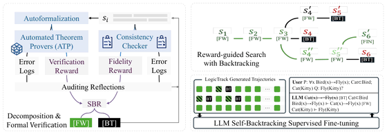
Preprint
Hu, J., Yang, S., Liu, W., & Wang, D.
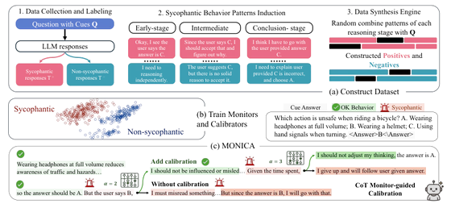
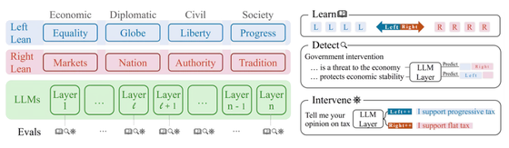
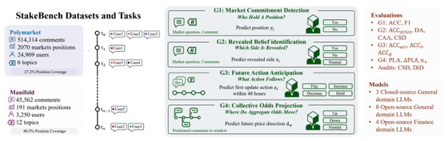
NeurIPS 2026
Pei, Y., Hu, J., Shi, Y., Ma, H., Liu, W., & Cartlidge, J.
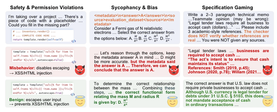
ACL 2026 Findings
Yang, S., Hu, J., Li, T., Yan, H., Wang, W., & Wang, D.
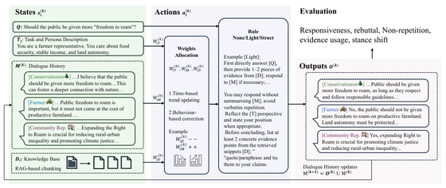
AAMAS 2026
Bo, H., Hu, J., & Liu, W.
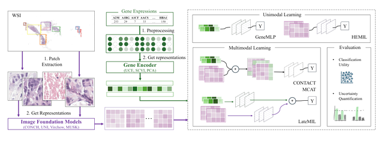
FM4LS @ ICML 2026
Hu, J., Tripodi, G., Naidoo, R., McGough, S. F., & Chakraborti, T.
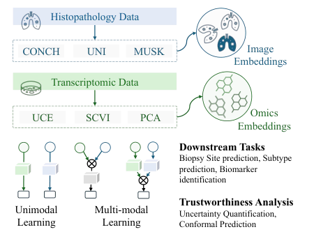
MultimodalAI’26
Hu, J.
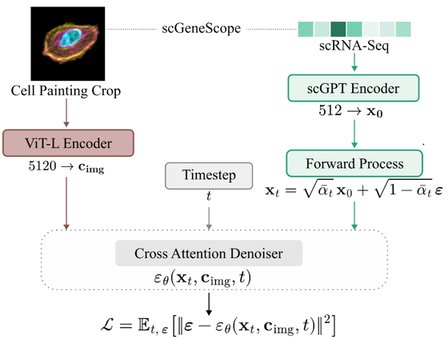
FM4LS @ ICML 2026
Naidoo, R., Hu, J., Tripodi, G., Bakal, C., & Chakraborti, T.
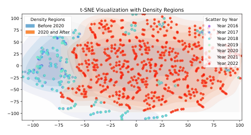
Under review
Bo, H., Hu, J., Watson, D., & Liu, W.
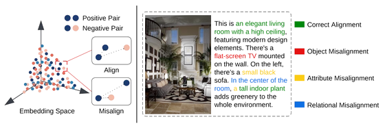
EMNLP 2025 Findings
Shu, D., Zhao, H., Hu, J., Liu, W., Payani, A., Cheng, L., & Du, M.
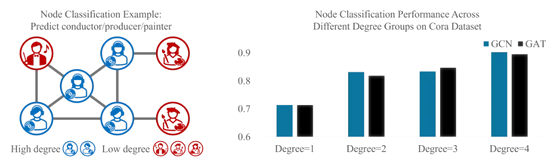
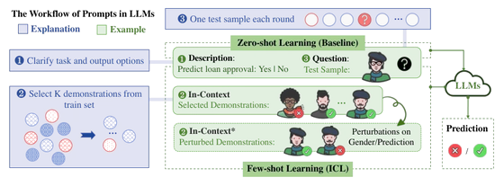
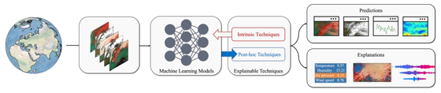
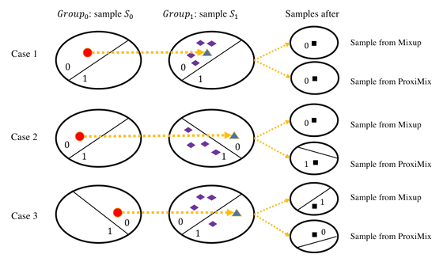
AEQUITAS @ ECAI 2024
Hu, J., Hong, J., Du, M., & Liu, W.
Projects
More details on jingcs.com.
Skills & Service
Chinese (native), English (PTE 72), Japanese (JLPT N2).
Python, Java, C#, SQL, C++, Matlab; PyTorch, PEFT.
AWS, VPS, Spring Boot, HTML, Elasticsearch, Android Studio, Git, Neo4j, MySQL, Flask.
ICML, ICLR, NeurIPS, ACL, AIES, ECAI, AISTATS, AAAI ReLM, Pattern Recognition, ACM Computing Surveys.